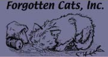

Related Links
Alley Cat Allies
http://www.alleycat.orgTheir mission is to transform and develop communities to protect and improve the lives of cats. A multitude of information for TNR and feral care can be found on this site.
Spay and Save
http://www.spayandsave.orgLocal animal rescue devoted to general animal welfare and education. The network of volunteers strive to help good people adopt healthy pets. Spay and Save works with Cat Crew to place adoptable cats.
PetFinder
http://www.petfinder.comA website devoted to finding your perfect companion. Searches in your neighborhood by inserting your zip code and any other point of interests in a pet. Also provides a listing of local rescue groups.

Forgotten Cats
http://www.forgottencats.orgProvides low cost spay/neuter and veterinary care at local clinics, also has many cats up for adoption.